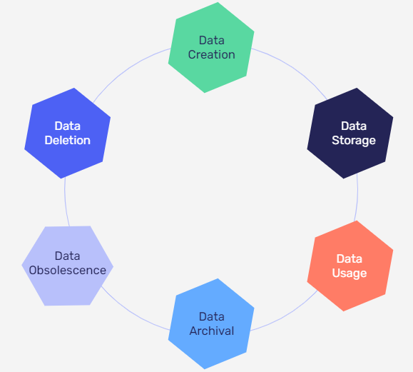
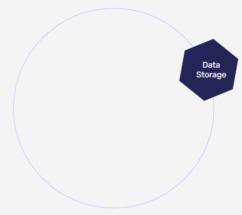
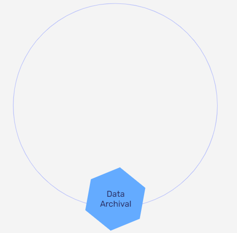
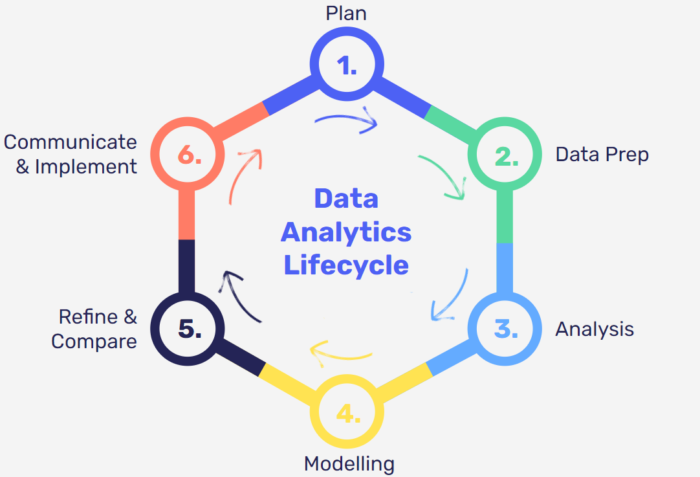
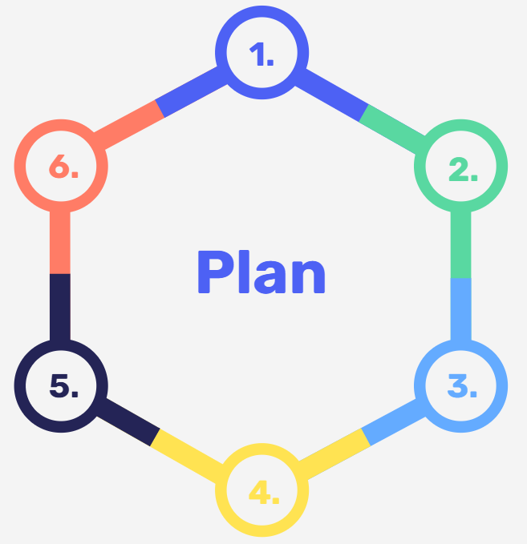
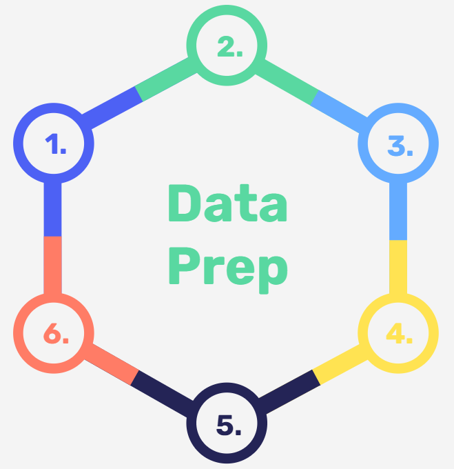
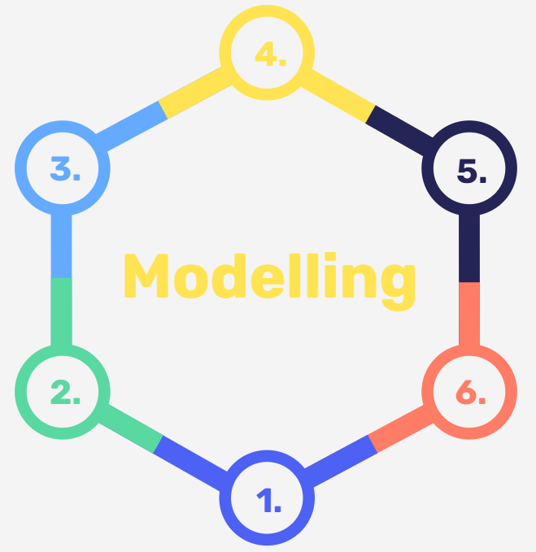
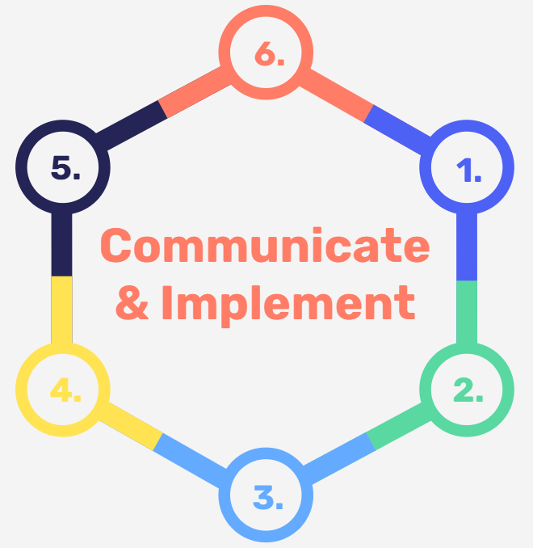

Describe the data analytics lifecycle and set out details, activities and roles at each stage in a real-world example
Design effective project briefs which communicate expectations to stakeholders
Identify business specific rules related to datasets and data characteristics that will influence project design and analysis
What does an analyst do?
The Data Lifecycle

Data LifeCycle
Is the data structured or unstructured?
Is it quantitative or qualitative?
Where has the data come from?
What size is the dataset?
Is it created continuously or in batches?
Data LifeCycle
Where is the data stored?
How many people require access?
What are the access requirements?
What rules relate to the data storage?

Data LifeCycle
How is the data being used?
How often is it being used?
Does anyone external to your organisation have access?
Are there any business rules?
Data LifeCycle
Is the data always needed?
What is the working life of the data?
Can it be made available given prior notice?

Data LifeCycle
Is the data still being used?
Is the data relevant?
Is the data needed?
Data LifeCycle
How can the data be securely and permanently removed?
Activity
In pairs, walk your partner through the data life cycle for a piece of data you have used in your role.
The Data Analytics Lifecycle


What is the context of business problem?
Why does the problem matter?
Who are the stakeholders?
What assumptions have you made about the problem?
What is your proposed solution and issues you have considered?
What data will you require?

blank
Does the data require cleaning?
How have you summarised the data?
Is there any missing data or outliers?
What are the data structures?
What are the data types?
What features are in your data?
blank
What aggregates have you calculated?
How have you visualised the data?
What trends have you observed?
Are there any correlations between features?
What insights have you gained from the data?

blank
What is your solution to the business problem?
Is it a prototype?
Based off your analysis, how have you come to this solution?
blank
Have you considered other solutions?
How do you know yours is the best one?
How have you optimised your solution?
How have you verified that the project requirements have been met?

blank
How have you presented your solution to the stakeholders?
What are your recommendations?
What are the next steps or future opportunities gained from this project?
Activity
You work for a recruiting firm and have been asked to produce a model that predicts the salary of a data analyst from a job board website. The problem is that not all jobs advertised list a salary range, so your line manager wants you to find a way of estimating these salaries based off features such as location, job title and keywords in the description.
In groups identify where each of the steps on the following slide would fall into in the data analytics lifecycle.
Ensure location data is consistent
Establish project deadline
Build predictive model
Fine tune model to optimise results
Move model to production
Understand stakeholder expectations
Extract keywords from job descriptions
Remove currency symbols from data
Identify adverts which list salaries
Plot visualisation of average salary per location
Communicate results to stakeholders
Aggregate mean salary per location
Extract location information from job adverts
Interpret results
Decide whether you are predicting continuous salary values or salary bands
Ensure location data is consistent
Establish project deadline
Build predictive model
Fine tune model to optimise results
Move model to production
Understand stakeholder expectations
Extract keywords from job descriptions
Remove currency symbols from data
Identify adverts which list salaries
Plot visualisation of average salary per location
Communicate results to stakeholders
Aggregate mean salary per location
Extract location information from job adverts
Interpret results
Decide whether you are predicting continuous salary values or salary bands
Ensure location data is consistent
Establish project deadline
Build predictive model
Fine tune model to optimise results
Move model to production
Understand stakeholder expectations
Extract keywords from job descriptions
Remove currency symbols from data
Identify adverts which list salaries
Plot visualisation of average salary per location
Communicate results to stakeholders
Aggregate mean salary per location
Extract location information from job adverts
Interpret results
Decide whether you are predicting continuous salary values or salary bands
Ensure location data is consistent
Establish project deadline
Build predictive model
Fine tune model to optimise results
Move model to production
Understand stakeholder expectations
Extract keywords from job descriptions
Remove currency symbols from data
Identify adverts which list salaries
Plot visualisation of average salary per location
Communicate results to stakeholders
Aggregate mean salary per location
Extract location information from job adverts
Interpret results
Decide whether you are predicting continuous salary values or salary bands
Ensure location data is consistent
Establish project deadline
Build predictive model
Fine tune model to optimise results
Move model to production
Understand stakeholder expectations
Extract keywords from job descriptions
Remove currency symbols from data
Identify adverts which list salaries
Plot visualisation of average salary per location
Communicate results to stakeholders
Aggregate mean salary per location
Extract location information from job adverts
Interpret results
Decide whether you are predicting continuous salary values or salary bands
Ensure location data is consistent
Establish project deadline
Build predictive model
Fine tune model to optimise results
Move model to production
Understand stakeholder expectations
Extract keywords from job descriptions
Remove currency symbols from data
Identify adverts which list salaries
Plot visualisation of average salary per location
Communicate results to stakeholders
Aggregate mean salary per location
Extract location information from job adverts
Interpret results
Decide whether you are predicting continuous salary values or salary bands
Ensure location data is consistent
Establish project deadline
Build predictive model
Fine tune model to optimise results
Move model to production
Understand stakeholder expectations
Extract keywords from job descriptions
Remove currency symbols from data
Identify adverts which list salaries
Plot visualisation of average salary per location
Communicate results to stakeholders
Aggregate mean salary per location
Extract location information from job adverts
Interpret results
Decide whether you are predicting continuous salary values or salary bands
Identifying Stakeholders
What is a stakeholder?
Who could be a stakeholder?
Stakeholders are individuals or groups who are involved in your project from whom you require input, or who will be influenced or impacted by the results.
Sponsor
Team
Users
Suppliers
Examples: Directors, Senior Leadership, Heads of Department
Examples: Project Managers, Team Leads, Line Managers, Sales Teams
Questions to consider in your communications with each stakeholder
Dealing with Stakeholders
Do you have enough information to draft a project brief to share with stakeholders?
Are you accurately capturing the necessary information through effective questioning?
A good question is one that lets you obtain the type, quality and quantity of the information you need
Open ended questions encourage people to reflect and reveal what is important to them
Type
Desired Outcome
Example
Explorative
Expand on new points of view and uncovered areas
Have you thought of...?
Affective
Reveal stakeholder's feelings about something
How do you feel about...?
Reflective
Encourage elaboration
What do you think causes...?
Probing
Invite a deeper examination
Can you describe how...?
Analytical
Find the root of a problem
What are the causes of...?
Clarifying
Help align and avoid misunderstandings
You mean that...?
Other things to consider
What return do they get?
What do they need?
What do you need?
What's their opinion of you?
What is their strategy?
Activity
In groups you will be assigned a business case.
Brainstorm a list of questions you would ask to get more insight into the problem
Think who else might be a stakeholder in the situation
Scenario 1
Yusef owns an online shoe e-commerce website. He isn’t happy with how sales are going, especially the beachwear section of his store. He has contracted you to create an analysis to help him with this issue.
I want you to look at the day-on-day sales to see where this is going wrong. I want moving averages, and a linear regression of the shopping baskets! I spent a lot of money buying 20,000 pairs of flip flops. They need to sell.
Scenario 2
Danielle runs a DJ store selling vinyl records and cassette tapes. Recently, she has found that she is running out of stock of certain albums and songs. Customers are asking for them but all her copies are gone! She’s contracted you to help.
I’ve got a list of the ages of my customers. I want you to explore who the customers are, how old are they? What is their vibe like?
Scenario 3
You are the data analyst at an advertising firm and have just implemented a new strategy to boost the ROI of a client’s advertising campaign, with the sign-off of both the account manager and your line-manager. However, later in the day, you receive an angry email from someone at the client company. It turns out they are temporarily in charge of the campaigns and don’t like your changes, asking you to immediately revert them. It seems they are unaware of how you usually operate.
Communication Plan
To help keep track of stakeholders you should maintain a communication plan to help you:
Determine how often you will be in contact with stakeholders
Decide on your messages (ignore, follow, inform, consult, involve, etc)
Decide on the medium of contact (email, phone call, etc)
Assign a responsible project member
Methods of Communication
Activity
Communication problems lead to delays, misunderstandings, frustration, workplace conflicts and a mismatch in stakeholder expectations.
What are some examples of effective communication methods?
In which context and with what type of audience are those effective?
A good data analyst will accurately frame a problem to be solved and share it with key stakeholders
Project Briefs
A project brief is the document that sets out the requirements for a piece of analysis
Who
What
When
Why
Who
What
When
Why
Project Sponsors
Those who set the analytical requirements and decides if your work has fulfilled their needs:
What questions do you need to ask them?
What do you need to produce for them?
What format are they expecting?
Do they understand the limitations of their data?
Who
What
When
Why
Metrics, Outputs and Format
What are the key pieces of information you need to agree on?
What will you be delivering?
What tools do you intend to use?
What will the final product look like?
How will you know that you have been successful?
Who
What
When
Why
Deadlines
What is the timeline for completion on your project?
When will your project be completed ?
What will be the check-in dates where you will give updates?
How often do you intend to communicate with stakeholders?
Who
What
When
Why
Context
Why does your project matter?
What is the business problem?
What will happen if the problem is left unchecked?
How will your solution fix this problem?
Does your industry have additional requirements?
Requirements Elicitation is a set of methods that allow you to gather information for a project from stakeholders
Observing
Ask the stakeholder to teach you what they know, then try it yourself
Recounting
Enacting
Documents
Apprenticing
Observing
Recounting
Enacting
Documents
Apprenticing
Watch the stakeholder carry out a task
Recounting
Enacting
Documents
Apprenticing
Observing
Recounting
Enacting
Documents
Apprenticing
Interview the stakeholder, asking them what they do
Observing
Enacting
Documents
Apprenticing
Observing
Recounting
Enacting
Documents
Apprenticing
Recreate the task and make observations
Observing
Recounting
Documents
Apprenticing
Observing
Recounting
Enacting
Documents
Apprenticing
Use existing documentation to guide parts of the project
Observing
Recounting
Enacting
Apprenticing
Observing
Recounting
Enacting
Documents
TacitvsExplicit
Tacit knowledge (knowing-how) is gained through experience. It is subjective and harder to communicate and capture. This includes insights and intuitions.
TacitvsExplicit
Explicit knowledge (know-that) is information that is fact and figure based. Easily codified in books, documents, reports and memos it is easily articulated, identified, shared and employed.
hat other questions should you be asking of these briefs?
Good Project Briefs:
Are concise and clear
Set time expectations clearly
Explicitly state the intended outputs
State the scope and purpose of the analysis
Are agreed and signed off by all parties
Brief Title
Situation- Share a brief description of what you hope to achieve during your project - what is the problem you are trying to solve? (max 400 words)
Relevance-How is the problem relevant to your role? Is the project relevant in the context of your day-to-day work? What impact could this project potentially have on your role/team/organisation? (max 400 words)
Tasks-What is your approach? Have you identified an existing source of data or are you going to create a new one? (max 400 words)
Challenges-What challenges have you identified going into this project? Is it access to data? Data protection? Anonymisation? IT? How do you envisage overcoming them, and what is your backup plan? (max 400 words)
Validation vs Verification
Verfication
The internal process of evaluating a data project to determine whether the products of a given development phase satisfy the conditions imposed at the start. This includes:
Inspecting
Design Analysis
Specification Analysis
Validation
The external process of evaluating a data project during or at the end of the development process to determine whether it satisfies specific external requirements. This includes:
Evaluating if the product meets the client expectations and requirements
Setting a Hypothesis
Null Hypothesis (H0)
Alternate Hypothesis (H1)
Assumes what you are investigating is false
Assumes what you are investigating is true
Null Hypothesis (H0)
Alternate Hypothesis (H1)
There is no relationship between studying and exam success
There is a relationship between studying and exam success
Recap
Learning Objectives
Describe the data analytics lifecycle and set out details, activities and roles at each stage in a real-world example
Design effective project briefs which communicate expectations to stakeholders
Identify business specific rules related to datasets and data characteristics that will influence project design and analysis
Assignment
Part 1- Data Analytics Life Cycle
Use a work-related example to identify the stages of the Data Analytics Lifecycle. Describe what happened in each stage and highlight what was your role in the process. In the end, add a summary of the project/analysis including the main findings, what went well and what could have been improved.
Word Count
Max 1500 words
Deadline
3 weeks
Deliverables
Word Document or PowerPoint presentation
Assignment
Part 2- Project Brief
Use a work-related example to create a project brief. This could be related to a project you are about to start or something new. Your brief should contain a business problem, the wider context of the analysis and a plan of action to solve the problem.